Self-hosting
HumHub Self-hosting
Implantação básica de aplicação web self-hosted em stack LAMP com foco em organização técnica do ambiente.
Visão Geral
Projeto de implantação de aplicação web self-hosted, organizado como laboratório técnico de stack LAMP com foco em clareza técnica e operação básica.
Desafio Técnico
O cenário técnico envolve disponibilizar uma aplicação web com servidor, camada PHP, banco relacional e rotinas básicas de configuração e manutenção.
Solução Desenvolvida
O roteiro técnico foi organizado em atualização do sistema, instalação de Apache e PHP, configuração de extensões, preparação do MariaDB, criação de banco e publicação da aplicação com diretório web e parâmetros do servidor.
Arquitetura / Fluxo
Ilustrações Técnicas
Registros visuais, diagramas ou representações técnicas utilizados para contextualizar a arquitetura, o fluxo e os resultados do projeto.
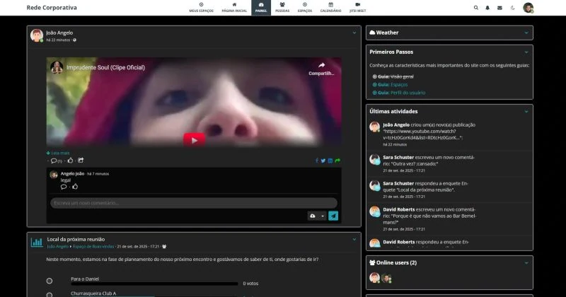
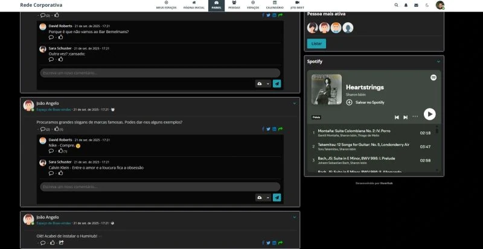
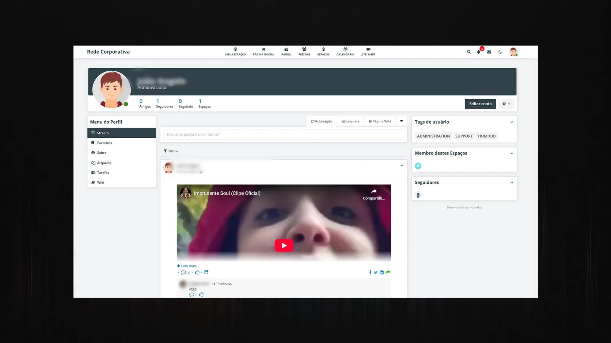
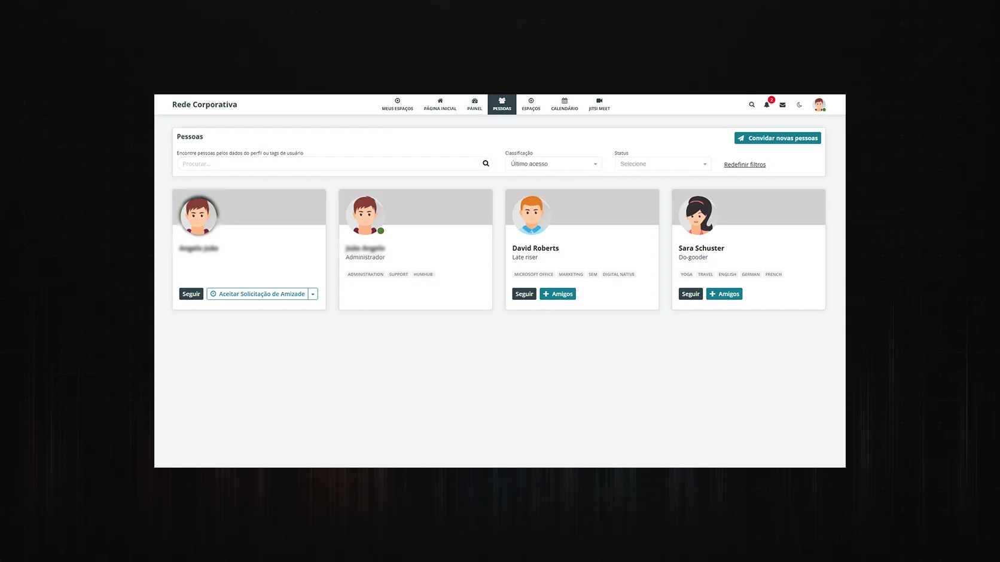
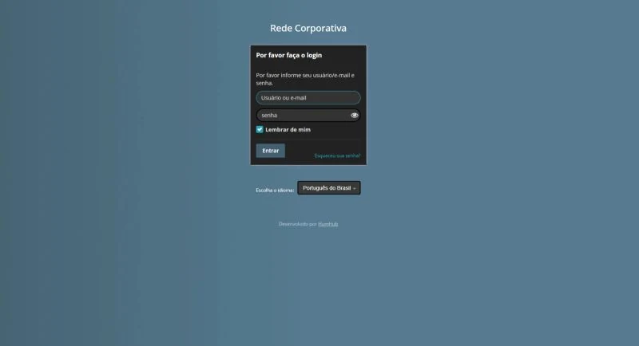

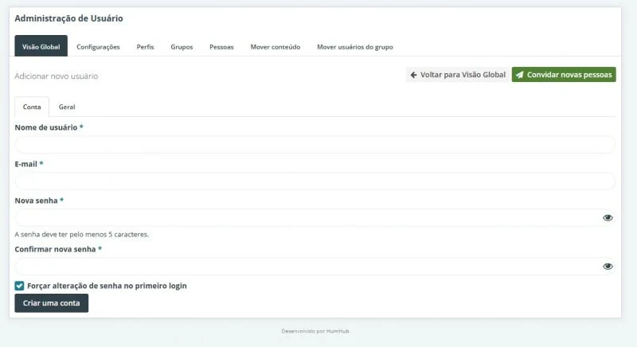
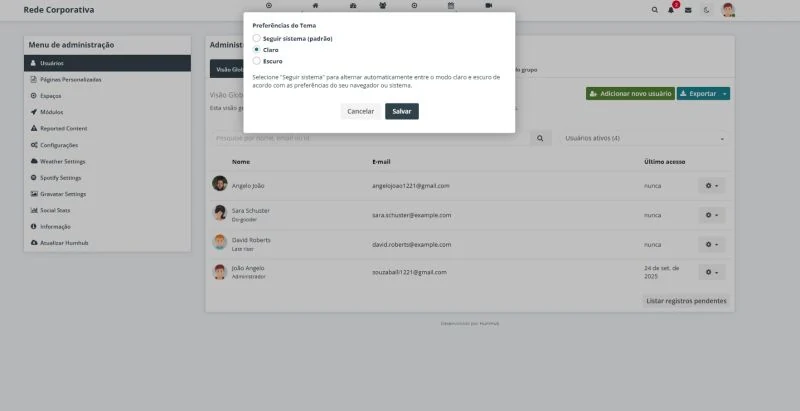
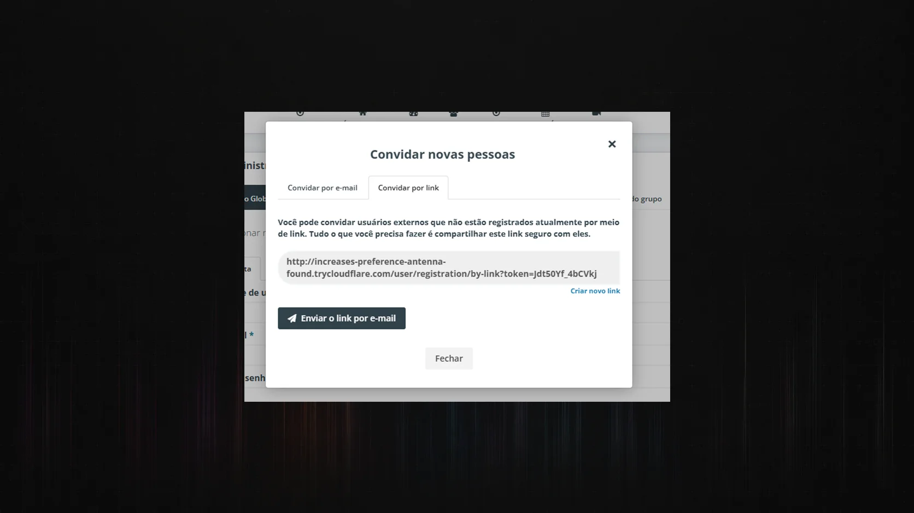
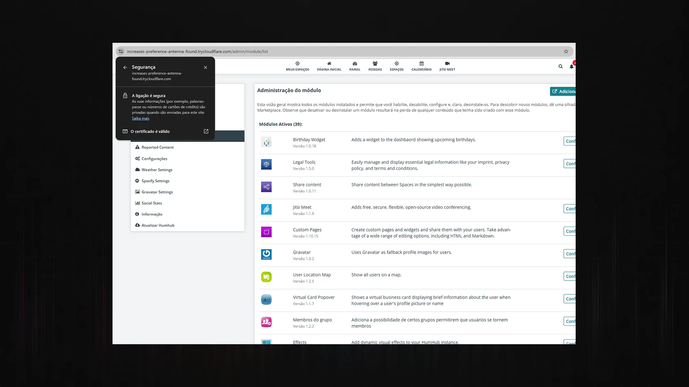
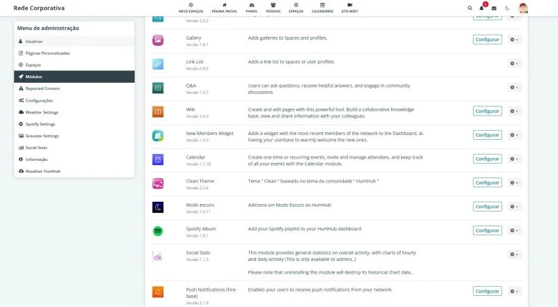
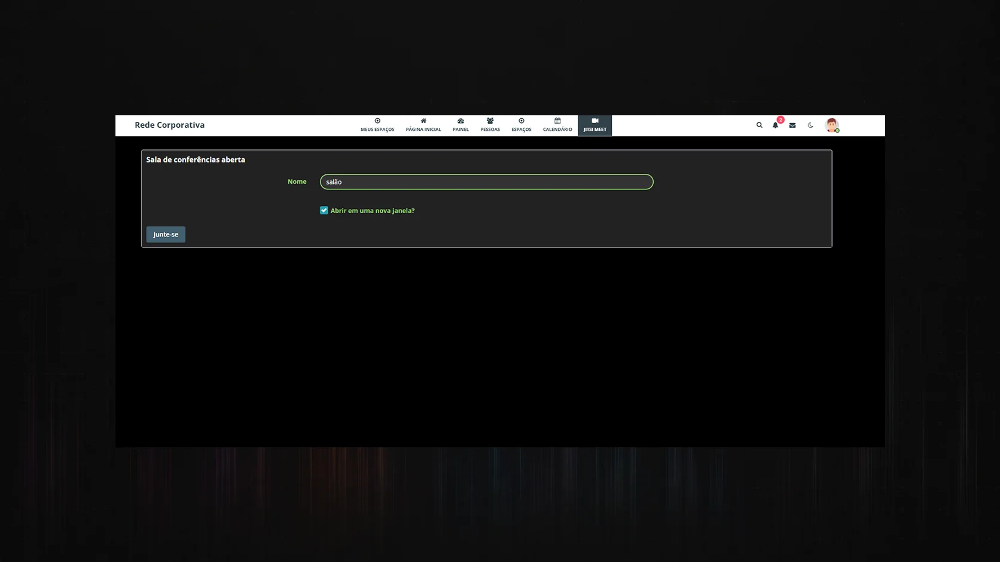
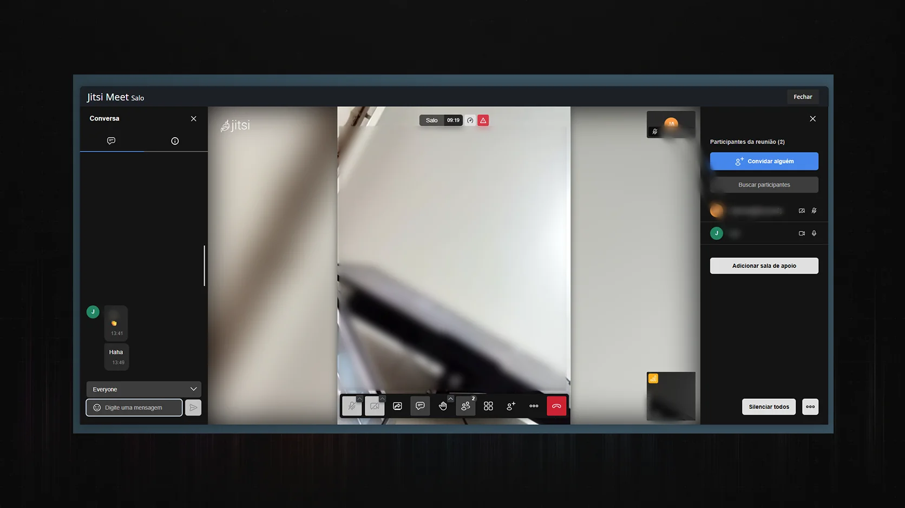
Entregas Técnicas
- Preparação de stack LAMP.
- Configuração de aplicação social self-hosted.
- Organização de diretório web e permissões.
- Base para manutenção e operação local.
Competências Demonstradas
- Self-hosting de aplicação web.
- Configuração de Apache e PHP.
- Preparação de banco de dados.
- Operação básica de serviço Linux.
Curadoria Pública
Este case foi reorganizado para apresentação pública, preservando a arquitetura, as decisões técnicas e o valor demonstrativo da solução. Informações sensíveis, identificadores reais e artefatos operacionais não fazem parte da versão pública.
Resultado Técnico
O material demonstra capacidade de instalar e organizar uma aplicação web self-hosted em infraestrutura básica, com bom valor de portfólio como estudo técnico de implantação.